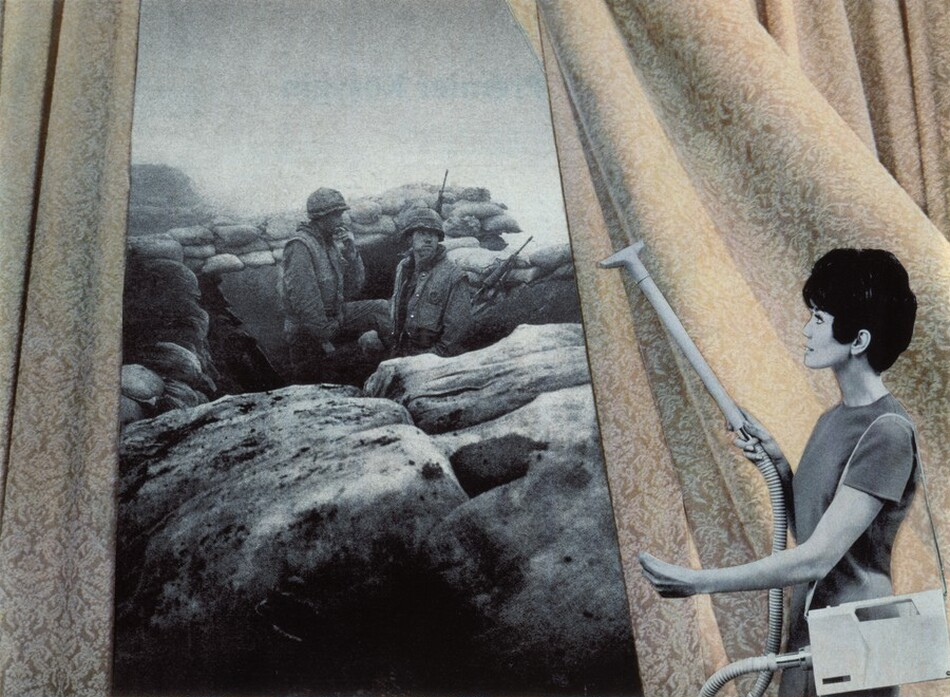
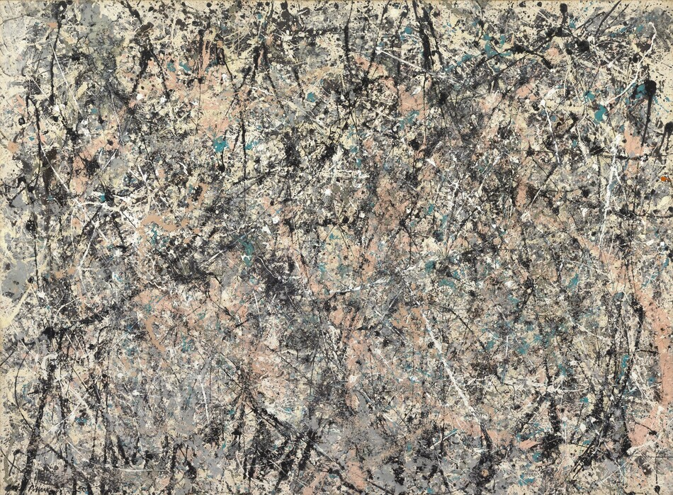
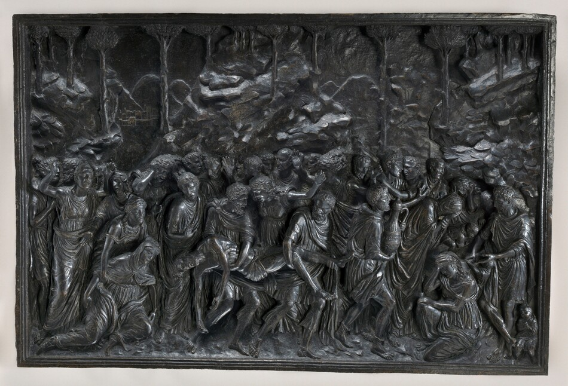
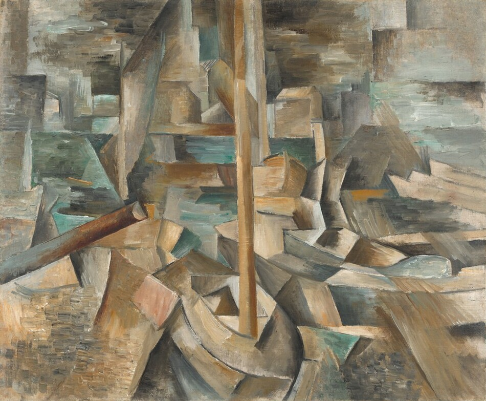

Sources and Methodology
Below are the different sources used in our project.

[Sources in A List] [Split into sections of datasets, articles, etc.]
Below are the different sources used in our project.

[Sources in A List] [Split into sections of datasets, articles, etc.]
The first step in creating a digital humanities project is gathering all the material and sources that will be used for the rest of the project.

Our project uses the 2017 Survey of Public Participation in the Arts (SPPA), produced by the National Endowment for the Arts and the U.S. Census Bureau and distributed by ICPSR.
View the SPPA 2017 dataset and documentation
[Explain why the team selected this dataset and its supporting scholarship. Discuss important limitations and connect these decisions to course readings.]
The second step in creating a digital humanities project is processing all the materials gathered, such as organizing the data, cleaning the data, finding the sources, digitizing everything, and more.

[Explain how the team prepared and analyzed the data. Include survey weights, missing responses, demographic groupings, verification, and methods used for each analytical component.]
The last step in creating a digital humanities project is presenting the findings and results in a clear and engaging manner with tools of presentation listed below.

[Explain the reasons for the website structure, chart types, spatial representation, and other digital components. Discuss readability, accessibility, and relevant class readings.]